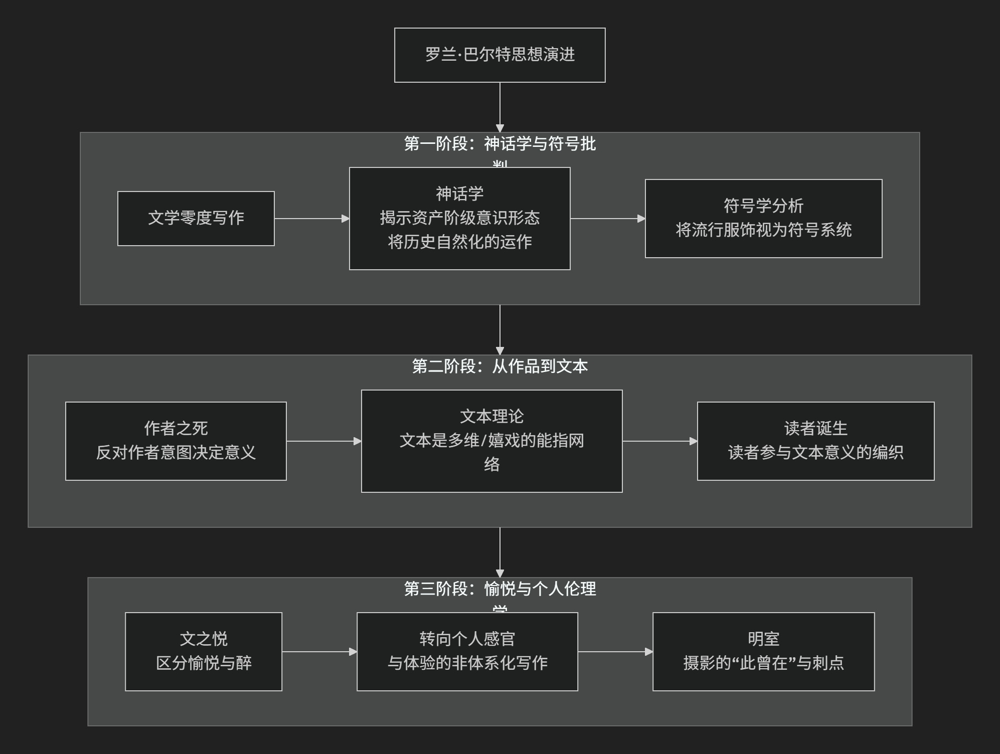

Roland Barthes
基于罗兰·巴尔特（Roland Barthes）哲学核心思想对陈京元博士案件进行评价。
罗兰·巴尔特是20世纪下半叶法国最具原创性和影响力的思想家之一，他横跨结构主义与后结构主义，其思想难以简单归类。他的核心思想可以概括为：将语言学模型（尤其是符号学）创造性地应用于分析广泛的文化现象（从文学、时尚到广告、神话），致力于揭示潜藏在看似“自然”和“天真”的表象之下的意识形态运作机制，并最终将意义的生产权和解释权从“作者”手中解放出来，交还给“读者”和“文本”本身。
巴尔特的思想极具魅力且充满流动性，其核心发展可梳理为三个主要阶段，其演进过程如下图所示：

第一阶段：神话学与符号批判（结构主义符号学时期）
此阶段，巴尔特深受索绪尔语言学的影响，致力于用符号学方法解码日常文化。
核心著作：《神话学》、《符号学要素》
核心命题：我们的日常生活充满了被“自然化”的“神话”，其功能是将 历史的、文化的、特定阶级的价值观伪装成永恒的、普世的、自然的真理。
关键操作：神话作为二级符号系统
一级系统（语言系统）：能指（声音-形象） + 所指（概念） = 符号 （如单词“玫瑰”）。
二级系统（神话系统）：一级系统中的 符号 整体，成为二级系统的 能指，这个能指指向一个新的、意识形态的 所指 （如“激情”）。
著名例子：《巴黎竞赛》杂志封面上，一个黑人士兵向法国国旗敬礼。一级意义是“一个士兵在敬礼”。但神话系统将其转化为一个能指，所指是“法兰西帝国是一个没有种族歧视的伟大帝国”，从而 将殖民主义的历史现实自然化为一种爱国主义的崇高形象。
目标：通过这种解码，巴尔特旨在 揭露资产阶级意识形态如何悄无声息地渗透并塑造我们的常识。
第二阶段：从“作品”到“文本”（后结构主义转折）
20世纪60年代末，巴尔特的思想发生决定性转折，从寻找固定结构转向拥抱意义的多元和游戏。
核心著作：《作者之死》、《S/Z》
核心命题：“作者”的权威死亡了，意义的生产中心从作者转移到了读者和文本本身的游戏。
“作者之死”：他反对传统的文学批评将“作者”的意图视为文本意义的最终权威。文本一旦完成，作者就“死亡”了， 意义由语言本身和读者的参与来决定。
“作品” vs “文本”：
作品：是 完成的、稳定的、像一颗果实 一样可以被消费的物品。意义是封闭的。
文本：是 一个方法论的领域、一个能指的编织过程。它永远是 未完成的、开放的、多维的，像一颗洋葱，只有层层包裹，没有核心。
可读文本 vs 可写文本：
可读文本：让读者成为被动的 消费者，意义是预设好的。
可写文本：邀请读者成为积极的 生产者，参与到意义的创造中，从中获得写作的狂喜（愉悦/Jouissance）。
第三阶段：愉悦、身体与个人伦理学
晚期，巴尔特越来越关注阅读和写作中身体的、感官的、非理性的体验。
核心著作：《恋人絮语》、《明室》
核心命题：文本的价值在于它能带给读者一种独特的、感官的、甚至是越轨的 愉悦。
愉悦：他区分了两种体验：
愉悦：一种舒适的、与文化相一致的、可被言说的快乐。
醉：一种更极致的、近乎失语的、身体性的、打破主体界限的狂喜。
《明室》与摄影：这是他最个人化、最动人的作品。他提出了两个关键概念来分析摄影的本质：
意趣：照片中可被清晰描述的文化和象征意义。
刺点：照片中某个偶然的、未被意图的细节（如一双鞋、一个表情）像针一样 刺伤 观者，激起一种个人的、难以言喻的、直接的情感震动。 刺点揭示了摄影的本质：“此曾在”，即对已逝时光的无可辩驳的见证，从而引发关于死亡和记忆的深刻思考。
—
核心要义总结
思想阶段 |
核心命题 |
关键概念与贡献 |
|---|---|---|
神话学与符号批判 |
文化神话将历史自然化，以服务特定意识形态。 |
神话作为二级符号系统、资产阶级意识形态自然化、符号学分析 |
从作品到文本 |
“作者之死”，意义在于 读者对”可写文本”的主动生产。 |
作者之死、作品 vs 文本、可读文本 vs 可写文本、愉悦 |
愉悦与个人伦理学 |
文本的价值在于其引发的 身体性”愉悦” 和 个人情感的”刺点”。 |
愉悦 vs 醉、意趣 vs 刺点、此曾在 |
思想特质与影响
文体大师：巴尔特本人就是其理论的实践者，其写作兼具理论深度与文学美感，充满隐喻和智慧。
批判的武器：他将符号学从一门精密的科学，转变为一种 批判日常文化意识形态的尖锐武器。
解放读者：他的“作者之死”和“文本理论”极大地解放了文学批评和阅读实践，为接受美学、读者反应批评等理论奠定了基础。
广泛影响：其思想深刻影响了文化研究、媒体研究、文学理论、电影研究、时尚理论等领域。
总而言之，罗兰·巴尔特的核心思想在于，他是一位 意义的侦探和享乐者。他教导我们， 没有什么意义是天然的，一切皆是建构； 没有谁是意义的绝对主人，每个人都可以是意义的创造者。他的全部工作是一场持续的、优雅的邀请：邀请我们以怀疑的眼光去 解码 我们周围的文化符号，并以一种感官的、游戏的、充满愉悦的态度去 编织 属于我们自己的文本和生命体验。